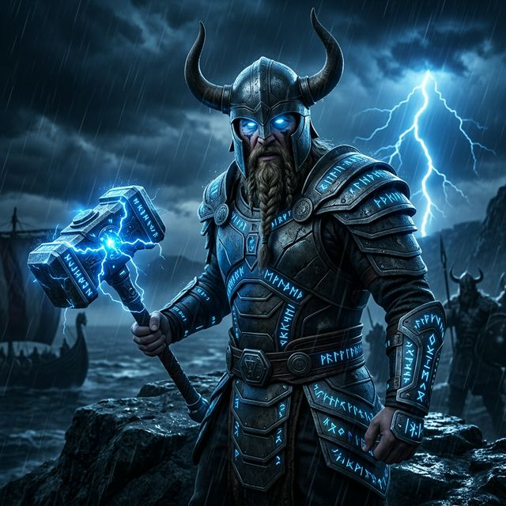

Grimnir is an orchestrator for authorized penetration tests and bug bounty work. It classifies a target, scopes it, hands the work to six specialist agents, and compiles one report. No finding reaches that report until it has been reproduced.
Most of the cost of a finding is not finding it. It is proving it to someone else.
You describe a target. Grimnir classifies it, scopes it, and delegates: HUGINN maps the surface, the right specialists test it, and nothing reaches the report until the evidence gate confirms it. Every step reads and writes the same engagement directory.
Grimnir makes proof a property of the data, not a habit you have to remember. Every finding carries a validation state, and a single script is allowed to promote it, from evidence a confirmation primitive produced.
Primitives for differential authorization, authentication, tier checks, out-of-band SSRF, SSTI, SQL injection, XSS, JWT, races and MCP each write a machine-readable verdict. Promotion cannot claim more than the verdict says. Most run on stdlib Python.
A High or Critical finding without the class-appropriate artifact (a negative control, a screenshot, an out-of-band hit) is hard-blocked from promotion. Only confirmed or validated findings reach a report body; theoretical ones sit in an appendix and are never submitted.
A finding lists a base claim plus its escalations, and each is tested on its own. Refute one escalation and the filed severity drops to the highest claim that survived, instead of the whole finding being thrown out. The hygiene check warns when a draft claims more than that floor.
Pack a finding, its evidence and its repro script into an isolated packet for a reviewer with no engagement context, and see whether it stands on its own.
A linter checks outbound reports for internal identifiers, codenames and stray punctuation before filing. Templates cover a single-finding bounty report, a rebuttal playbook and a pre-submission checklist.
Scope is reconciled against what was tested (tested, skipped, gated, untouched), and an engagement cannot close on the assets that happened to get attention. Coverage is reported as "22 of 811 endpoints", never "airtight".
Grimnir is a methodology layer, not a scanner. It decides where to spend effort, keeps testing inside scope and inside the program's rules, and turns "I think this is a bug" into something a triager can reproduce.
An intelligence layer sets a spend, skip or gated prior for each lane before expensive testing starts.
Declarative attack chains are ranked against the asset map, then rendered as runnable commands ending in a confirm step.
Agents append to a cross-agent feed, so a secret found in an APK or a script reaches the specialist who can use it.
Each agent is a full methodology definition with its own scripts. HUGINN always runs first; a report compiler merges everyone's confirmed findings, deduplicates across domains and surfaces cross-domain chains.
Recon: subdomains, ports, tech fingerprint, crawling and JS analysis, producing the asset map and the intel feed.
REST, GraphQL, gRPC and traditional web apps: auth, authorization, injection, business logic, WAF bypass.
Prompt injection, jailbreaks, system-prompt extraction, RAG poisoning, agentic abuse, guardrail bypass and MCP servers.
Host and service enumeration, vulnerability scanning, credential attacks, exploitation, privilege escalation and lateral movement.
AWS, Azure and GCP IAM and privilege escalation, storage exposure, metadata and SSRF credential theft, serverless, Kubernetes and containers.
Android and iOS: static and dynamic analysis, traffic interception, Frida, deeplink and IPC abuse, insecure storage, certificate-pinning bypass.
Classification picks the lead agent. Mixed targets get several, and a mobile app, an MCP tool or a cloud console is usually treated as a thin layer over a backend API that Specter picks up.
REST, GraphQL and gRPC services, plus server-rendered apps with sessions and forms.
Chatbots, retrieval apps, tool-using and multi-agent systems.
Enumeration, tool poisoning, cross-server shadowing and rug-pull diffing, with an opt-in schema-driven fuzzer.
Hosts, CIDR ranges, services, and Active Directory domains.
AWS, Azure and GCP accounts, buckets, serverless functions, Kubernetes and container registries.
Android and iOS apps, plus the backend they talk to.
Methodology, playbooks and a read-only guest-access mapper for Experience Cloud sites.
Infrastructure, application, AI and cloud layers together, with cross-domain chains in the final report.
The repo is the generic toolkit. Everything about a target lives in a per-engagement directory outside it.
Ships with cross-tenant BOLA, mass assignment, missing-auth replay, in-band SQL injection, reflected XSS and a Salesforce pack. Matching is reachability-aware and described by a JSON schema.
Per-program rate, daily budget, required headers, quiet hours, scanning and AI-tool bans, enforced by a script, with egress routed through the program's proxy.
Scope checks before active testing, and session handling that keeps you authenticated as your own test accounts.
Query HTTP history, replay an organic authenticated request with its auth intact, and export a PoC, all visible in Caido's UI.
Emit gate-passing findings as SARIF 2.1.0 or a merged JSON bundle for external vulnerability managers.
Enumerate, probe and call MCP tools, scan for poisoning and shadowing, diff for rug pulls, and confirm with the MCP harness primitive.
Every agent reads the same rules at startup, and a never-submit list of findings that should not be filed, each written from a measured failure.
An append-only intel feed, activity ledger and decision log make a run readable and reviewable after the fact.
Turn freeform credential notes into a structured per-engagement vault.
| Framework | Agent |
|---|---|
| PTES, MITRE ATT&CK | Hunter |
| OWASP API Top 10 (2023), WSTG v5.0 | Specter |
| OWASP LLM Top 10, Agentic Top 10, MCP Top 10, MITRE ATLAS | ARTEMIS |
| MITRE ATT&CK Cloud, CIS Benchmarks | Nimbus |
| OWASP MASVS / MASTG | Nomad |
Stay inside program rules, spend effort where it is reachable, and file reports a triager can replay.
Scope, delegate, track coverage against a denominator, and deliver one unified report with cross-domain chains.
Test your own apps and APIs with the same evidence discipline, and export confirmed findings as SARIF.
Dedicated methodology for LLM apps, agents and MCP servers, from prompt injection to tool-call authorization.
Four walkthroughs drive Grimnir from /engage to a confirmed finding against deliberately vulnerable apps. Run them on the same isolated host as Grimnir.
Grimnir is prompt and methodology definitions plus scripts, so it follows the harness you run it in.
Clone the repo and launch Claude Code. You get the orchestrator and all six agents immediately.
The grimnir-oc build targets OpenCode, which can run other model providers. View grimnir-oc
More harnesses and providers are expected over time, and Grimnir is meant to get more capable as the models underneath it improve. No specifics are promised yet.
# Tier 0: zero install git clone https://github.com/DoctorGoz/grimnir.git ~/workspace/grimnir cd ~/workspace/grimnir && claude # then, inside Claude Code /engage acme-corp /recon acme-corp
Tier 0 gives you the orchestrator, all six agents, the intel feed, structured findings, the validation gate and the stdlib confirmation primitives. When you want the external toolchains, setup/setup.sh offers lite, standard and full profiles. The README covers each tier.
Grimnir is built for authorized security testing, bug bounty and research. Scope and authorization are confirmed before any active testing, and you need written authorization for every system you point it at. The labs run on your own host for exactly that reason.